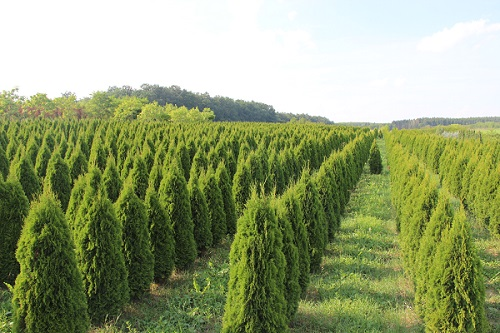
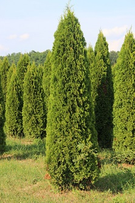
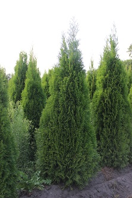
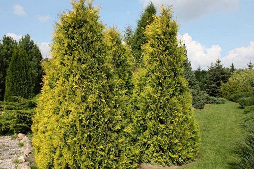
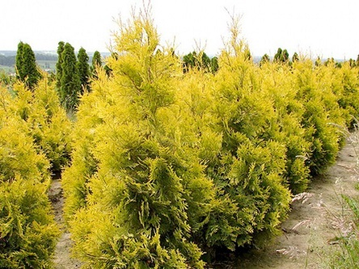

Туя западная Смарагд (Smaragd) является достойнейшим представителем туй. Это декоративное вечнозеленое дерево с изумрудной хвоей напоминает стройный кипарис. Крона плотная, узкая, пирамидальной формы. Цвет хвои – зеленый. Отличительной особенностью Смарагда является сохранение цвета хвои и в зимний период, что свойственно лишь немногим сортам туи западной.
  
| Размер | Цена |
|---|---|
| 0,8-1,0 | 990р |
| 1,0-1,2 | 1350р |
| 1,2-1,4 | 1900р |
| 1,4-1,6 | 2900р |
| 1,5-1,75 | 3600р |
| 1,75-2 | 4400р |
Туя западная Голден Брабант (Thuja occidentalis Golden Brabant) — золотисто-желтый вариант известного сорта туи западной Брабант. Быстрорастущий конусовидный хвойный кустарник, высотой более 3м и диаметром до 1,5м. Чешуйчатая хвоя золотисто-желтая, сохраняет свой цвет зимой и летом. Не страдает от солнечных ожогов. Предпочитает умеренно влажные, хорошо дренированные почвы. Хорошо переносит стрижку и условия города.
 
| Размер | Цена |
|---|---|
| 3-3.5 | 12700р |
| 3.5-4 | 16900р |
| 4-4.5 | 22500р |